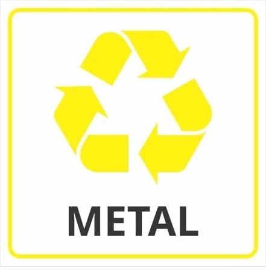

Esse site faz parte de um projeto escolar! cuja finalidade é
incentivar e também mostrar como e quais materiais
podem ou não serem reutilizados/reciclados.
Reconhecendo a importância da conscientização ambiental, buscamos fornecer informações claras e acessíveis para que todas as
pessoas possam tomar decisões informadas sobre o descarte correto de
resíduos e contribuir com a preservação do meio ambiente.
Materiais Que Podem Ser Reciclados:
Nem todos os materiais podem ser reciclados, mas neste primeiro
momento iremos ver quais podem e devem ser
reciclados. Abaixo segue a lista desses materiais:
Azul - Papel e
Papelão
Vermelho
- Plástico
Verde - Vidro
Amarelo - Metais
Marrom
- Resíduos Orgânicos
Preto - Madeira
Como Podemos Reciclar os Metais?
O processo de reciclagem do metal envolve etapas cruciais para sua reutilização eficiente. Primeiramente, ocorre a coleta de metais usados, que são separados de outros materiais indesejados. Em seguida, esses metais passam por um processo de triagem e fragmentação para transformá-los em pedaços menores. Posteriormente, o metal é fundido em fornos de alta temperatura, onde impurezas são removidas e o metal refinado é moldado em lingotes ou tarugos para facilitar seu uso na fabricação de novos produtos, como latas de alumínio, peças de automóveis e materiais de construção. A reciclagem do metal é um processo valioso, pois reduz a extração de recursos naturais, economiza energia, previne a poluição ambiental e contribui para a economia circular, em que os metais podem ser reciclados repetidamente sem perder suas propriedades. É uma prática essencial para a sustentabilidade e a preservação do meio ambiente

A reciclagem do metal apresenta uma série de benefícios significativos. Além de conservar recursos naturais, como minérios, ela também reduz a energia necessária para a produção de metal a partir de fontes primárias. Ao evitar a mineração, a reciclagem do metal contribui para a preservação de ecossistemas e a redução da degradação ambiental. Além disso, a reciclagem do metal ajuda a diminuir a quantidade de resíduos enviados para aterros sanitários, reduzindo a poluição e promovendo a gestão adequada de resíduos. Ao reutilizar o metal reciclado na fabricação de novos produtos, também se cria um ciclo econômico sustentável, com redução de custos e geração de empregos na indústria de reciclagem. A reciclagem do metal é, portanto, uma prática crucial para a preservação do meio ambiente e o desenvolvimento sustentável.
Tempo de Decomposição dos Metais:
s metais possuem um tempo de decomposição muito longo, e alguns deles não se decompõem naturalmente. Isso ocorre porque os metais são elementos químicos estáveis e não sofrem processos de decomposição biológica como os resíduos orgânicos. Em vez disso, os metais podem passar por processos de corrosão, mas ainda permanecem em sua forma metálica.
Alguns exemplos de tempo de decomposição aproximado de alguns metais são:
FERRO: O ferro pode levar centenas de anos para se decompor completamente, dependendo das condições ambientais e da presença de umidade e oxigênio.
ALUMÍNIO: O alumínio é um metal resistente à corrosão, e pode levar centenas de anos ou mais para se decompor naturalmente.
COBRE: O cobre também é um metal durável e resistente à corrosão, e pode levar centenas de anos para se decompor completamente.
CHUMBO: O chumbo é um metal pesado e não é biodegradável. Ele não se decompõe naturalmente e pode permanecer no ambiente por milhares de anos.
É importante destacar que a reciclagem de metais é uma alternativa importante para reduzir o impacto ambiental desses materiais. A reciclagem permite que os metais sejam reutilizados e transformados em novos produtos, evitando a extração de recursos naturais e reduzindo a necessidade de produção de metais a partir de matéria-prima virgem.
Como Podemos Reutilizar os Metais?
Há várias maneiras criativas de reutilizar metais e estender sua vida útil. Primeiramente, é possível realizar o upcycling, transformando metais em novos produtos ou objetos úteis, como porta-canetas feitos de latas de metal vazias. Além disso, os metais podem ser incorporados à decoração de interiores e exteriores, como na utilização de molduras de janelas antigas como elementos decorativos. Também é possível explorar a arte e a escultura, soldando e moldando sucatas de metal para criar obras abstratas ou esculturas funcionais. Outras opções incluem projetos de jardinagem, como transformar latas de metal em vasos para plantas, e a reparação e conserto de objetos de metal quebrados. Ao reutilizar metais, estamos reduzindo o desperdício, preservando recursos naturais e adicionando um toque de criatividade ao ambiente.
Reutilizar metais é uma forma inteligente e criativa de reduzir o desperdício e contribuir para a sustentabilidade. Além disso, é uma oportunidade de explorar a expressão artística e o design personalizado. Ao transformar metais usados em novos produtos ou objetos úteis, como porta-canetas, móveis ou elementos decorativos, estamos estendendo sua vida útil e evitando a necessidade de extrair mais recursos naturais. Isso economiza energia, reduz a quantidade de resíduos enviados para aterros sanitários e acrescenta um toque único e personalizado aos ambientes em que vivemos. Além disso, a reutilização de metais quebrados ou danificados, por meio de reparos e consertos, também contribui para a redução do desperdício e a economia de recursos.
A reutilização de metais também oferece oportunidades na jardinagem, onde latas de metal podem ser transformadas em vasos ou luminárias, adicionando charme e estilo aos espaços externos. Além disso, a arte e a escultura utilizando metais permitem criar obras de arte únicas e expressivas. A soldagem e moldagem de sucatas de metal podem resultar em esculturas abstratas, móveis artísticos ou elementos decorativos originais. Essa forma de reutilização criativa contribui para a redução do desperdício, a economia de recursos e a promoção da sustentabilidade, ao mesmo tempo em que permite explorar a expressão artística e a individualidade.